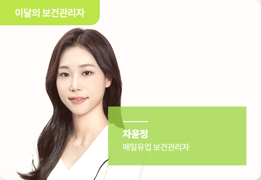
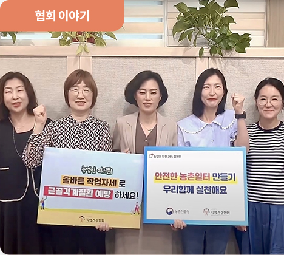

[바로아는 산업보건법]
건설업의 산업재해 예방(II)
[월례특강]
중대재해처벌법과 위험성평가
[연속기획]
직업보건영역에서 빅데이터의 분석
[마음쉼터]
스트레스 관리법
[특별기획]
제5회 직업건강대상 수상 인터뷰
[알면 쓸모있는 의료상식]
열사병, 가장 위험한 온열질환.
[직업건강 생생정보]
항공기 승무원 안전 및 건강(Aircrew Safety & Health) – 직무스트레스 (Job Stress) -
[연구동향]
의료기관 종사자의 휴게시설 만족도가 피로에 미치는 영향
[보건관리자의 하루]
보건관리자의 하루
[보건관리자 우수사례]
직업건강 우수사례 발표 - 알잘딱깔센! 보건관리
[산업보건 진로탐방]
직업건강협회 대전 근로자 건강센터를 소개합니다

[협회소식]
[교육소식]
교육안내
[사업보고]
건강디딤돌 현장모니터링
[오늘의 Pick]
사업장 세척제 급성 중독사고
[근로자 보건교육]
심폐소생술(CPR)
건강안전연구소 소개
마음건강힐링센터 소개
구인구직
퀴즈?퀴즈!